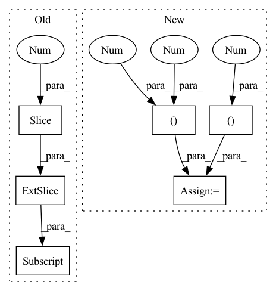

Pattern ID :24419
Before Change
if direction == 2:
f = f.T
elif direction == 3:
f = f[:, ::-1]
diagonal = (direction in (1,3))
_texture.cooccurence(f, output, diagonal, symmetric)
return output
After Change
output.fill(0)
Bc = np.zeros((3,3), f.dtype)
positions = [(1,2), (2 ,2 ), (2,1), (2,0 )]
y,x = positions[direction]
Bc[y,x] = 1
_texture.cooccurence(f, output, Bc, symmetric)
return outputIn pattern: SUPERPATTERN
Frequency: 3
Non-data size: 6
Instances Fragment ID: 75869527
Project Name: luispedro/mahotas
Commit Name: 86478f36bef70a43bc077c3294c1bd8370bd6ac5
Time: 2010-11-22
Author: lpc@cmu.edu
File Name: mahotas/texture.py
M Class Name: AnonimousClass
N Class Name: AnonimousClass
M Method Name: cooccurence(4)
N Method Name: cooccurence(4)
M Parent Class:
N Parent Class:
M File Name: mahotas/texture.py
N File Name: mahotas/texture.py
M Start Line: 178
M End Line: 183
N Start Line: 178
N End Line: 182
Before Change
_, width, height = img.shape
c, h, w = img.shape
bboxes_xyxy = utils.xywh2xyxy(bboxes[:, 2:] )
bboxes_xyxy[:,0] *= w
bboxes_xyxy[:,1] *= h
bboxes_xyxy[:,2] *= wAfter Change
img_ = cv2.rectangle(img_, (bbox[0], bbox[1]), (bbox[2], bbox[3]), (255, 0, 0), 3)
if labels:
img_ = cv2.putText(img_, labels[i], (bbox[0], bbox[3] ), cv2.FONT_HERSHEY_SIMPLEX, 1, (255 , 255, 255 ))
return Image.fromarray(img_)
Fragment ID: 75869533
Project Name: vcasecnikovs/yet-another-yolov4-pytorch
Commit Name: 7e8632a2c9b9c1346f088505d707de0ae3939ee7
Time: 2020-05-29
Author: casecnikov@gmail.com
File Name: utils.py
M Class Name: AnonimousClass
N Class Name: AnonimousClass
M Method Name: get_img_with_bboxes(4)
N Method Name: get_img_with_bboxes(2)
M Parent Class:
N Parent Class:
M File Name: utils.py
N File Name: utils.py
M Start Line: 23
M End Line: 41
N Start Line: 27
N End Line: 51
Before Change
angles = np.arctan2(flows[:, 1], flows[:, 0]) // in radians, [-pi, pi]
// Normalize form 0 to 255
angles_normalized = (((angles + np.pi) / (np.pi*2.)) * 255).astype(int)
rgb = cm.hsv(angles_normalized)[:, :-1] // hsv is cyclic
magnitude = np.sqrt(np.sum(flows**2, axis=1))
magnitude /= magnitude.max()
return rgb * magnitude[:, np.newaxis]After Change
// https://stackoverflow.com/questions/28898346/visualize-optical-flow-with-color-model
// Use Hue, Saturation, Value colour model
hsv = np.zeros((flows.shape[0], 1, 3 ), dtype=np.uint8)
hsv[..., 1] = 255
mag, ang = cv2.cartToPolar(flows[..., 0], flows[..., 1])
hsv[..., 0 ] = ang * 180 / np.pi / 2
hsv[..., 2] = cv2.normalize(mag, None, 0, 255, cv2.NORM_MINMAX)
rgb = cv2.cvtColor(hsv, cv2.COLOR_HSV2RGB)
rgb = rgb[:, 0, :] / 255. // Normalize to 1
rgb[rgb < 0.2] = 0.2 // Just for visualize not moving points
return rgb Fragment ID: 75869535
Project Name: jabb0/fastflow3d
Commit Name: ef8013b20d8d6b8f7090a5d6ba114bc64617682c
Time: 2021-07-07
Author: carlosmn1997@gmail.com
File Name: visualization/laserscanvis.py
M Class Name: LaserScanVis
N Class Name: LaserScanVis
M Method Name: flow_to_rgb(2)
N Method Name: flow_to_rgb(2)
M Parent Class:
N Parent Class:
M File Name: visualization/laserscanvis.py
N File Name: visualization/laserscanvis.py
M Start Line: 86
M End Line: 92
N Start Line: 82
N End Line: 93